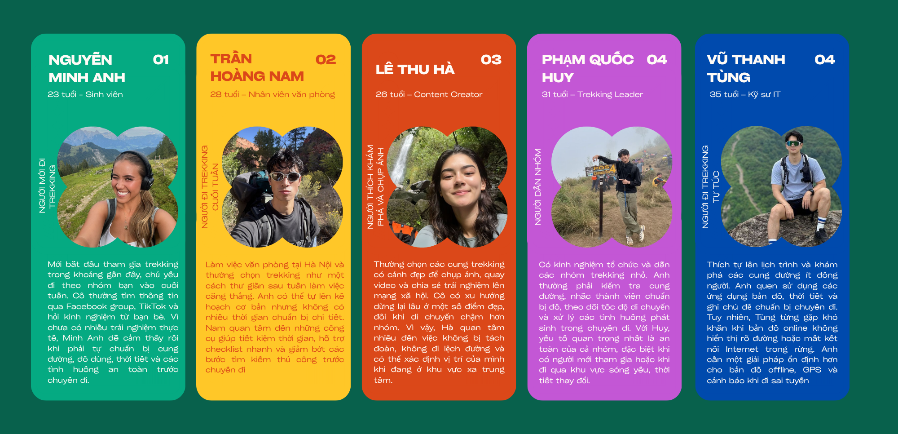
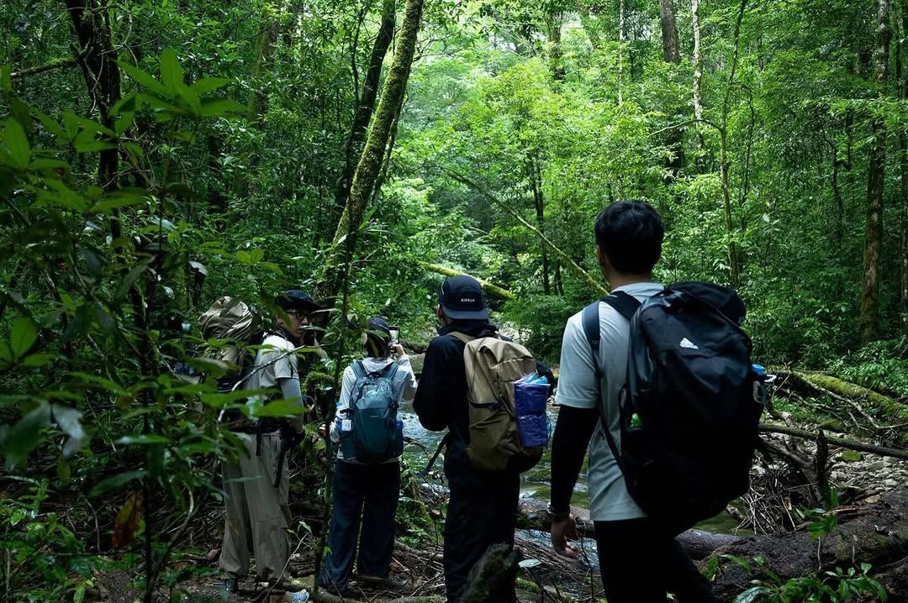
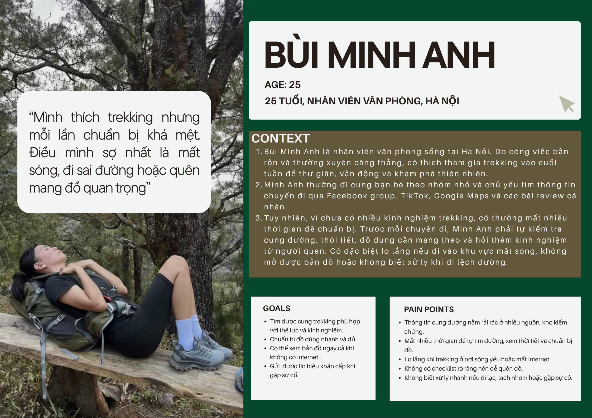
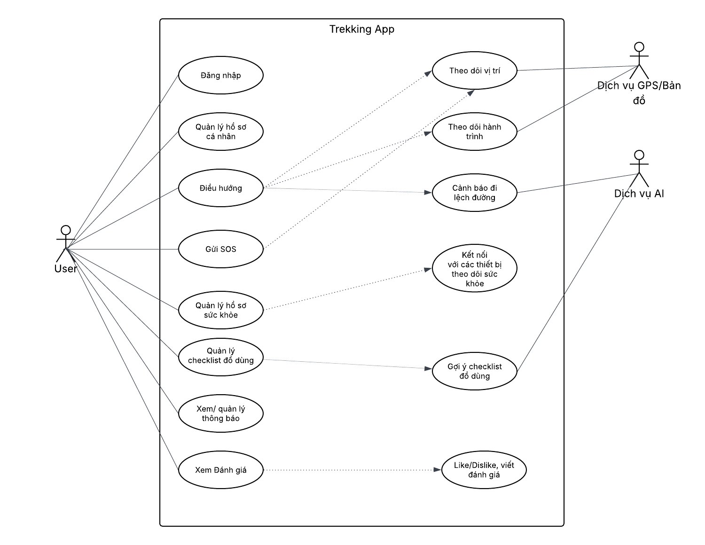
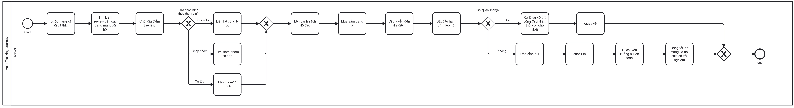
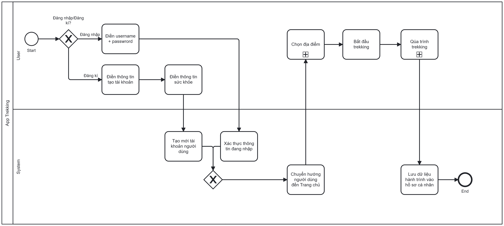
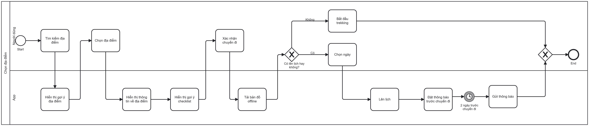

Rủi ro sinh tồn thực tế
Thời tiết, địa hình, mất liên lạc và thiếu chuẩn bị có thể biến một chuyến đi thành tình huống nguy hiểm.
BA2601 · Trekking & Chill
Rừng núi thênh thang - Bước đi vững vàng
Ứng dụng đồng hành giúp người dùng khám phá cung đường, lập kế hoạch, tải bản đồ offline, nhận cảnh báo lệch tuyến và gửi SOS khi cần trong hành trình trekking.
Project Overview
Người đi trekking cần thông tin cung đường đáng tin cậy, dữ liệu thời tiết, checklist thiết bị, bản đồ hoạt động khi mất sóng và một kênh hỗ trợ khẩn cấp trong những tình huống rủi ro.
TrekCompanion gom các nhu cầu đó vào một trải nghiệm có cấu trúc: khám phá, chuẩn bị, điều hướng, cảnh báo và đánh giá sau chuyến đi.
Problem Space
Thời tiết, địa hình, mất liên lạc và thiếu chuẩn bị có thể biến một chuyến đi thành tình huống nguy hiểm.
Khi vào rừng núi, mất sóng khiến người dùng khó xác định vị trí và hướng đi tiếp theo.
Danh sách đồ dùng chung chung làm người dùng dễ quên món quan trọng theo thời tiết, cung đường hoặc thể trạng.
Thiếu kinh nghiệm chọn cung, chuẩn bị đồ và đánh giá độ khó khiến người mới dễ trì hoãn hoặc chọn sai chuyến đi.
Goal / Solution
Giúp người dùng theo dõi vị trí ngay cả khi không có mạng, giảm phụ thuộc vào bản đồ online.
So sánh vị trí hiện tại với tuyến đã chọn để nhắc người dùng quay lại khi có nguy cơ lạc hướng.
Cung cấp hành động khẩn cấp để gửi vị trí và thông tin sức khỏe cho nhóm hỗ trợ.
Gợi ý đồ dùng theo cung đường, thời tiết, kinh nghiệm và hồ sơ cá nhân để chuẩn bị đầy đủ hơn.
User Journey
Khám phá cung đường
Chọn ngày / lập kế hoạch
Tải bản đồ offline
Chuẩn bị checklist
Bắt đầu trekking
Theo dõi hành trình
SOS / đánh giá
User Research
Xác định cách người dùng chọn cung đường, chuẩn bị đồ, xử lý mất sóng và phản ứng khi có rủi ro an toàn.
Người dùng chuẩn bị checklist thế nào, dùng bản đồ nào, sợ điều gì nhất và cần hỗ trợ gì trong tình huống khẩn cấp.
Người mới đi trekking, người đi theo nhóm cuối tuần và người có kinh nghiệm nhưng bận rộn trong khâu chuẩn bị.


Insights

User Persona
Mất thời gian chuẩn bị, lo mất sóng, sợ đi sai đường, dễ quên đồ quan trọng.
Tìm cung đường phù hợp, chuẩn bị đủ đồ, có bản đồ offline, gửi SOS khi cần.
System Diagrams




Data Model / ERD
Sơ đồ ERD mô tả các bảng dữ liệu chính và mối quan hệ trong hệ thống TrekCompanion.
Interactive Prototype
Figma prototype được nhúng trực tiếp để giữ đúng trải nghiệm như Notion, không dựng lại thủ công các màn hình.